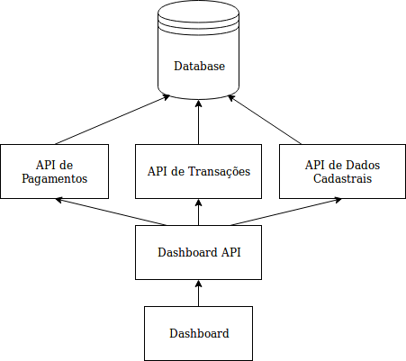

Quebrei minhas aplicações em microserviços
e agora?
Bianca Rosa
lead dev @ stone

- Python
- Go
- Lua / JS
- DevOps
- PythOnRio / Pyladies
- O inicio
- O mínimo de um microserviço
- Responsabilidades
- Segurança
- Complexidade
- O sonho
Vamos fazer um software!
e assim nasce um monolito

E por que isso é algo ruim?
- É difícil pra corrigir bugs
- É difícil subir coisas novas
- É difícil de escalar
- Pouca flexibilidade para escolher tecnologias
Vamos usar microserviços!
... e nunca mais vamos ter problemas!

Temos microserviços!
E por que isso é melhor?
- É mais fácil pra corrigir bugs
- É mais fácil pra subir coisas novas
- É mais fácil de escalar
- Temos mais flexibilidade de tecnologia

Até que...
- Onboarding mais complexo
- Vários bugs em sistemas diferentes ao mesmo tempo
- Mudanças afetam várias aplicações
- Pouca visibilidade de problemas em alguns serviços
Isso é um monolito distribuído!

E nem sempre isso é melhor do que um monolito.
Às vezes precisamos cultivar uma cultura DevOps antes, para depois podermos focar novamente em desenvolver de forma saudável.
- O inicio
- O mínimo de um microserviço
- Responsabilidades
- Segurança
- Complexidade
- O sonho
Não suba microserviços se você não tem...
- Provisionamento rápido
- Monitoramento Básico
- Deploy rápido
Não abra mão de...
- Alertas
- Métricas (preferencialmente, de negócio)
- Logs
- O inicio
- O mínimo de um microserviço
- Responsabilidades
- Segurança
- Complexidade
- O sonho
Microserviços precisam ter escopos bem pensados.
- O inicio
- O mínimo de um microserviço
- Responsabilidades
- Segurança
- Complexidade
- O sonho
Seu serviço tem autenticação? Ou ele trabalha confiando nos outros serviços? Como você garante isso?
- O inicio
- O mínimo de um microserviço
- Responsabilidades
- Segurança
- Complexidade
- O sonho
Tente definir as linguagens e tecnologias core do seu time.
Tenha estrutura e padrões de código definidos em aplicações que compartilham a mesma linguagem.
Cuidado com ecossistemas complexos.
Use comunicação assíncrona sempre que for possível.
Cada comunicação entre serviços é mais um ponto de falha.
- O inicio
- O mínimo de um microserviço
- Responsabilidades
- Segurança
- Complexidade
- O sonho
twitter: @__biancarosa
slides: biancarosa.com.br/slides
tks :)